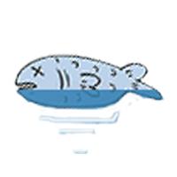
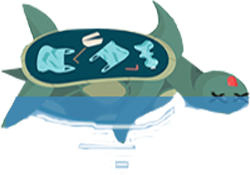
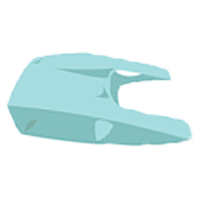
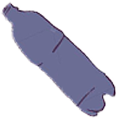

Eksperter advarte menneskeheten i flere tiår om at hvis vi ikke endret vanene våre.
Hvis vi fortsatte å bruke og kaste om og om igjen, at vannmassene ville stige, og sjølivet ville dø ut.
Men vi klarte ikke å se for oss farene før de var rett foran oss.
Oljeslipp, gassutslipp og avskogning gjorde tilslutt at havnivået steg, og i tillegg gjorde det ulevelig.
Nå er havet bare liv til søppel og avdøde arter, og det er ingenting vi kan gjøre for å stoppe det lenger.
Det er desverre intet håp for oss lenger, vi mennesker alene kan ikke stoppe det, eller reversere det.
Får et trist syn, jeg må komme meg hjem med en gang!
Trykk pilen for å komme deg til neste side, men gjerne få med deg historien først :)